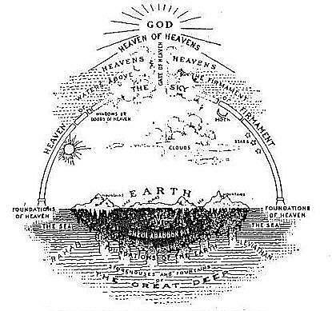

Uoverenstemmelser
Forklaring
Denne side er dedikeret til at vise nogle af de primære uoverensstemmelser i den logik og tro man finder i det ”hellige og ufejlbarlige” Guds ord, ikke for at støde eller angribe Kristne ideologier, men blot at påpege nogle af de mange manipulative, Paradoxale og selvmodsigende elementer der findes i Krisen- og Jødedommens fundamentale kultur, tro og historie. udover det ønsker jeg at analysere den ekstrem defensive kultur der omgår Bibelens troværdighed og hvordan mennesker finder "løsninger" til at kunne operere virkelighed med modsatte overbevisninger. Da det interessere mig mest
Disse vers er checket i følgende versioner af bibelen for at sikre deres validitet, hvis du kan finde steder modstridende med disse versioner er du velkommen til at kontakte mig i formularen nederst på siden. eller hvis du har nogle uoverensstemmelser er du velkommen til at sende dem samme sted.
- Dansk (1917 / 1931)
- Norsk (1930)
- King James Bible
- Svensk (1917)
Uoverenstemmelser
Her er 16 forskellige uoverenstemmelser fra bibelen inklusiv deres tilhørnende bibelvers, dette er kun en brøkdel da det kræver kæmpe indsats at tjekke multiple versioner og validere deres oversættelser.
Vis Mere
Hvad sagde Jesus om at bære sit eget vidne?
Johannes 5:31
Dersom jeg vidner om mig selv, er mit Vidnesbyrd ikke sandt.
Johannes 8:14
Jesus svarede og sagde til dem: »Om jeg end vidner om mig selv, er mit Vidnesbyrd sandt
Vis Mere
Sagde Jesus noget i Hemmelighed?
Johannes 18:20
Jesus svarede ham: »Jeg har talt frit ud til Verden; jeg har altid lært i Synagoger og i Helligdommen, der, hvor alle Jøderne komme sammen, og i Løndom har jeg intet talt.
Markus 4:34
Men uden Lignelse talte han ikke til dem; men i Enerum udlagde han det alt sammen for sine Disciple.
Vis Mere
Bar Jesus sit eget kors til Golgatha?
Johannes 19:17
og han bar selv sit Kors og gik ud til det saakaldte »Hovedskalsted«, som hedder paa Hebraisk Golgatha,
Matthæus 27:32
Men medens de gik derud, traf de en Mand fra Kyrene, ved Navn Simon; ham tvang de til at bære hans Kors.
Vis Mere
Jesus forbandede et fikentræ, visnede det straks?
Matthæus 21:19
Og han saa et Figentræ ved Vejen og gik hen til det, og han fandt intet derpaa uden Blade alene. Og han siger til det: »Aldrig i Evighed skal der vokse Frugt mere paa dig!« Og Figentræet visnede straks.
Markus 11:20
Og da de om Morgenen gik forbi, saa de, at Figentræet var visnet fra Roden af.
Vis Mere
Døde jesus før eller efter templets forhæng blev revet over?
Matthæus 27:50
Men Jesus raabte atter med høj Røst og opgav Aanden. Og se, Forhænget i Templet splittedes i to Stykker, fra øverst til nederst; og Jorden skjalv, og Klipperne revnede
Lukas 23:45
Og det var nu ved den sjette Time, og der blev Mørke over hele Landet indtil den niende Time, idet Solen formørkedes; og Forhænget i Templet splittedes midt over. Og Jesus raabte med høj Røst og sagde: »Fader! i dine Hænder befaler jeg min Aand;« og da han havde sagt det, udaandede han.
Vis Mere
To tyve blev korsfæstet sammen med Jesus. Har begge tyve hånet Jesus?
Markus 15:32
Kristus, Israels Konge — lad ham nu stige ned af Korset, for at vi kunne se det og tro!« Ogsaa de, som vare korsfæstede med ham, haanede ham.
Lukas 23:43
Og han sagde: »Jesus! kom mig i Hu, naar du kommer i dit Rige!« Og han sagde til ham: »Sandelig, siger jeg dig, i Dag skal du være med mig i Paradiset.«
Vis Mere
Jesus kaldte på en tolder der sad ved en bod, hvad var hans navn?
Matthæus 9:9
Og da Jesus gik videre derfra, saa han en Mand, som hed Matthæus, sidde ved Toldboden; og han siger til ham: »Følg mig!« Og han stod op og fulgte ham.
Markus 2:14
Og da han gik forbi, saa han Levi, Alfæus's Søn sidde ved Toldboden, og han siger til ham: »Følg mig!« Og han stod op og fulgte ham.
Vis Mere
Hvordan døde Judas?
Matthæus 27:5
Og han kastede Sølvpengene ind i Templet, veg bort og gik hen og hængte sig.
Apostlenes G. 1:16-19
»I Mænd, Brødre! det Skriftens Ord burde opfyldes, som den Helligaand forud havde talt ved Davids Mund om Judas, der blev Vejleder for dem, som grebe Jesus; 17thi han var regnet iblandt os og havde faaet denne Tjenestes Lod. 18Han erhvervede sig nu en Ager for sin Uretfærdigheds Løn, og han styrtede ned og brast itu, og alle hans Indvolde væltede ud, hvilket ogsaa er blevet vitterligt for alle dem, som bo i Jerusalem, saa at den Ager kaldes paa deres eget Maal Hakeldama, det er Blodager.
Vis Mere
Er Mose lov nyttig?
2.Timotheus 3:16
Hvert Skrift er indaandet af Gud og nyttig til Belæring, til Irettesættelse, til Forbedring, til Optugtelse i Retfærdighed,
Hebræerne 7:18-19
Thi vel sker der Ophævelse af et forudgaaende Bud, fordi det var svagt og unyttigt (thi Loven har ikke fuldkommet noget); men der sker Indførelse af et bedre Haab, ved hvilket vi nærme os til Gud
Vis Mere
Angrer Gud nogensinde?
1.Samuel 15:10
Da kom HERRENS Ord til Samuel saaledes: 11»Jeg angrer, at jeg gjorde Saul til Konge; thi han har vendt sig fra mig og ikke holdt mine Befalinger!
1.Samuel 15:29
Visselig, han, som er Israels Herlighed, lyver ikke, ej heller angrer han; thi han er ikke et Menneske, at han skulde angre!«
Vis Mere
Hvem opfordrede David til at tælle Israels kampklarer mænd?
1.Krønikebog 21:1
Satan traadte op mod Israel og æggede David til at holde Mandtal over Israel.
2.Samuel 24:1
Men HERRENS vrede blussede atter op mod Israel, saa at han æggede David mod dem og sagde: »Gaa hen og hold Mandtal over Israel og Juda!«
Vis Mere
Hvem dræbte kæmpen Goliat?
2.Samuel 21:19
Atter kom det til Kamp med Filisterne i Gob, Betlehemiten Elhanan, Ja'irs Søn, nedhuggede da Gatiten Goliat, hvis Spydstage var som en Væverbom.
1.Samuel 17:50
Saaledes fik David Bugt med Filisteren med Slynge og Sten, og han slog Filisteren ihjel, skønt han ikke havde Sværd i Haanden.
Vis Mere
Hvor var Jesus i de følgende dage efter hans dåb?
Markus 1:12-13
Og straks driver Aanden ham ud i Ørkenen. Og han var i Ørkenen fyrretyve Dage, medens han fristedes af Satan, og han var blandt Dyrene; og Englene tjente ham.
Johannes 1:28
(Note dette er kontekst til fremkommende vers) Dette skete i Bethania hinsides Jordan, hvor Johannes døbte.
Johannes 1:32-35
Og Johannes vidnede og sagde: »Jeg har set Aanden dale ned som en Due fra Himmelen, og den blev over ham. Og jeg kendte ham ikke; men den, som sendte mig for at døbe med Vand, han sagde til mig: Den, som du ser Aanden dale ned over og blive over, han er den, som døber med den Helligaand. Og jeg har set det og har vidnet, at denne er Guds Søn.« Den næste Dag stod Johannes der atter og to af hans Disciple.
Johannes 2:1
Og paa den tredje Dag var der et Bryllup i Kana i Galilæa; og Jesu Moder var der.
Vis Mere
Hvem bærer hvis byrde?
Galaterne 6:2
Bærer hverandres Byrder og opfylder saaledes Kristi Lov!
Galaterne 6:4-5
Men hver prøve sin egen Gerning, og da skal han have sin Ros i Forhold til sig selv alene, og ikke til Næsten; 5thi hver skal bære sin egen Byrde.
Vis Mere
Da Jesus blev født, befalede Gud deres flugt?
Lukas 2:21-22
Og da otte Dage vare fuldkommede, saa han skulde omskæres, da blev hans Navn kaldt Jesus, som det var kaldt af Engelen, før han blev undfangen i Moders Liv. Og da deres Renselsesdage efter Mose Lov vare fuldkommede, bragte de ham op til Jerusalem for at fremstille ham for Herren,
Lukas 2:25-26
Og se, der var en Mand i Jerusalem ved Navn Simeon, og denne Mand var retfærdig og gudfrygtig og forventede Israels Trøst, og den Helligaand var over ham. Og det var varslet ham af den Helligaand, at han ikke skulde se Døden, førend han havde set Herrens Salvede.
Lukas 2:39
Og da de havde fuldbyrdet alle Ting efter Herrens Lov, vendte de tilbage til Galilæa til deres egen By Nazareth.
Matthæus 2:13
Men da de vare dragne bort, se, da viser en Herrens Engel sig i en Drøm for Josef og siger: »Staa op, og tag Barnet og dets Moder med dig og fly til Ægypten og bliv der, indtil jeg siger dig til; thi Herodes vil søge efter Barnet for at dræbe det.«
Vis Mere
Var Johannes døberen den tilbagekommende Elias?
Matthæus 17:10-13
Og hans Disciple spurgte ham og sagde: »Hvad er det da, de skriftkloge sige, at Elias bør først komme?« Og han svarede og sagde: »Vel kommer Elias og skal genoprette alting. Men jeg siger eder, at Elias er allerede kommen, og de erkendte ham ikke, men gjorde med ham alt, hvad de vilde; saaledes skal ogsaa Menneskesønnen lide ondt af dem. Da forstode Disciplene, at han havde talt til dem om Johannes Døberen.
Johannes 1:21
Og de spurgte ham: »Hvad da? Er du Elias?« Han siger: »Det er jeg ikke.« »Er du Profeten?« Og han svarede: »Nej.«
Bibelske Lovbud
Bibelske Lovbud
Religioner er intet nyt for mennesket, i min optik skyldes religioner mennesket evne til at mønstergenkende og mentale samhørighedsproiritet, blandet ind med en variende grad af narcisime. Loven er kun redskaber til religion til at håndhæve straffen eller belønne i takt hermed.
Vis Mere
De Abrahamitiske Religioner
Abrahamitiske religioner er en fællesbetegnelse for en række religioner med ophav i gammel, semitisk monoteistisk tradition, primært jødedom, kristendom og islam. De kaldes sådan, fordi de sporer deres tradition tilbage til patriarken Abraham. Mindre hyppigt nævnt er bahá'í, druserne og rastafarianismen, men også disse inkluderer Abraham blandt deres åndelige forfædre. Også mandæismen og sikhismen nævnes undertiden på grund af et vist idéfællesskab eller slægtskab med henholdsvis den jødiske og islamiske tradition, men de regnes ikke for abrahamitiske i egentlig forstand, da de lånte elementer ikke inkluderer Abraham-fortællingerne.
Vis Mere
Jehova's Perfekte Følelser
Vi mennesker bruger følelser til at mentalt behandlevores magtesløshed, For en omnipotent skbaer er det menneskelige føleses landskab meningsløst. nedenfor vil jeg sætte følelser op skematisk for at give et overblik over vores følelses landskab og hvad der som regel udløser dem.
| Følelse | Respons | Mennesker | Jehova |
|---|---|---|---|
| Frygt | virkelig eller opfattelse af trussel | Yup | Nope |
| Skuffelse | uopfyldte håb eller forventninger | Yup | Nope |
| Vrede | Provokation eller frustration | Yup | Nope |
| Sorg | Fortrydelse dårlige hændelser | Yup | Nope |
| Skyld | Handle ondt gøre skade | Yup | Nope |
| Anger | Fortrydelse uforudsete hændelser | Yup | Nope |
Gennem bibelen har vi modstridende koncepter af gud, da gud beskrives som en gud uden anger og menneskelige følelser trods de gennemblødende følelser af vrede had og at have evnen til at skifte mening under debat med mennesker som i beretningen og abraham der overtaler gud gradvist til at ikke destruere Sodoma og Gomorre, med foreslag som hvis der blot findes 10 retfærdige mænd i byen ville han ikke ødelægge byen, trods han vidste hvad fremtiden ville bringe da gud skulle være omnipotent
Vis Mere
Jehova's Endeløse Kærlighed
For dem der er vokset op i kristendom mødte vi en bizar autoritets figur, den bliver præsenteret som elskende, men det er perverteret type kærlighed, jalouxi, ukonsistent, besidderisk og hævnesfuld, dens ofre vil blive sat fælder umulige at undgå, og den kærlighed førhen vist fordamper så snart vi udviser selvstændighed. Trods det bliver de præsenteret som skyldfri, retfærdig og ude for kritik. Hvis deres valg årsager i destruktion, skade endda død vold ødelæggelse, bliver skyld straks derigeret til andre eller offeret, hvis deres handlinger modstrider sig selv eller ser onde ud, forklares det at vi blot ikke forstår guds overleende moralitet.
Vis Mere
Narcisime i Religioner
Narcesime er en mental forstyrrelse oftest fundet i lige fra en til en mishandlingsforhold til perceptions forvrængende politiske, religøse og sociale grupper, Hvor alt for ofte det ikke bliver påtalt. Nogle gange bliver det set som en uskadelig personalitet, nogle gange holder narcisiten en høj autoritær position, der gør dem i stand til at slippe afsted med mishandling vi ikke normalt ville tolerere, andre gange påtager narcisiten en communal humanistisk facade på, blot for at mishandle bag lukkede dører. Narcesime er en kæmpe factor i det religøse miljø, og det er vigtigt vi påtaler det når vi ser det.
Vis Mere
Chorus Sacerdotum
O trætte tilstand af menneskeheden!
Født under en lov til en anden bundet;
Forglemt begyndt og alligevel forbudt forfængelighed;
Skabt syg, befalede at være lydig.
Hvad betyder naturen ved disse forskellige love?
Lidenskab og grund, selvdivision årsag.
Er det mærke eller majestæt af magt
At lave lovovertrædelser, som det kan tilgive?
- from Mustapha
Vis Mere
Biblens Blodmagi
I bibelen præsenteres et skyldsystem udregnet i blod altså død, Jehova påbød efter syndefaldet at mennesker i al evighed skulle arbejde hård for sin føde og
ofre dyr for at sone deres synd. Hvilket bragte synd til verden og alle mennesker på jorden skulle have arvet. Jehova havde valget til at skabe en verden uden
blodmagi og arvelig synd, men han valgte at tage den mest sadistiske og dramatiske vej overhovedet tænketligt.
Han lod hele menneskeracen lide i tusinder af år under
trænge kår og plaget af pest hunger og død. Desuden lod Jehova tillade hundredeviser af velfungerende religioner trives i alle andre lande end i omegnen af kanaens land.
Hvilket vil sige et en minimal brøkdel af verden kendte overhovedet til den "eneste sande skaber" og hans tilstedeværelse til den dag idag er stadig ubeviseligt og trods det
dømmer han dem som har intet bevis for at tro på ham til evig tortur smerte og anger for at ikke at tilbede tro og følge hans "guddommelig befalinger"
Vis Mere
Fri Vilje Ifølge Bibelen
Personligt tror jeg ikke på bibelens bud på fri vilje. Man får at vide at der er en belønning ved scenarie 1 og en uvurderlig smerteful straf ved scenarie 2, jeg mener at
for at fri vilje skal begge scenarier have samme effekt, ellers ville jeg mene det blot er manipulation og tvang.
Da Jehova i det gamle testamente skabte mennesket gav han mennesket den ultimative gave "Fri vilje" og rationaliten går således han skabte os med valget imellem godt og
ondt hvilket tillod os at gør gode eller onde ting, selvom vi kunne vælge at dræbe og skade utallige andre, at stoppe os i at gøre ondt ville være at tage vores frie valg
og ville tvinge os til at kun være gode. Så Jehova kan ikke interferrer hverken ved at hindrer en mishandler eller dets offer, tilgængæld vil alle der udøver ondt blive
straffet for alt det de har gjort.
Men dette er en falsk dikotomi og beviset er skaberen, for imens mennesker lever med fri vilje dog med smerte lever skaberen både med fri vilje og uden smerte, hvorfor skal
vi lide menneskelig skrøbelige kår når gud kunne have skabt os lige med ham selv? Men svaret er simpelt Jehova valgte at skabe sygdom trængsel smerte i en defekt verden.
Vis Mere
Skabt I Hans Billide
Jehova er ifølge bibelen Altvidende allestedsværende og ufejlbarlig, dette abstrakte billede kan være svært for primitive mennesker at relatere til hvilket er
derfor Bibelen ligesom mange andre trosretninger påstår at vi blev skabt i jehovas billide for at gøre det mere personligt og relaterbart dette viser sig oftest
gennem antropomorf billidetale som for eksempel beskrivelsen af gud der gik rundt i haven med Adam og Eva. alt dette er til for at humanisere en gud ligeledes
udtrykke kristne i deres brug af fader og Jehova fantasier om den ultimative forældre hvilket gør det nemmere at tilsætte deres tillid til en som er så fremmed.
Men når det går op for os og vi ser igennem alt denne humanisering bliver det klart at hvis denne entitet havde skabt os, ville den have mere at forsvare sig for
end noget menneske nogensinde skabt. som vi ser i 1 Mosebog 8:21 erkender Jehova at han har skab mennesker higer efter det onde i en tidlig alder.
men er det en ting vi har fået fra hans billide, eller er vi ikke skabt i hans billide. Mange kristne tror ikke på at han har en fysisk form, men hvorfor har vi så,
og hvorfor ville han skabe en dimension hvor vi konstant må kæmpe for at holde os i live og lide megen smerten følelsesmessigt og fysisk, når skaberen selv er immun,
til alt dette.
1 Mosebog 8:21
Og da HERREN indaandede den liflige Duft, sagde han til sig selv: »Jeg vil aldrig mere forbande Jorden for Menneskenes Skyld, thi Menneskehjertets Higen er ond fra Ungdommen af, og jeg vil aldrig mere tilintetgøre alt, hvad der lever, saaledes som jeg nu har gjort!
Vis Mere
Jehova's Moralske Kompass
Nogle kristne påstår at vi blev skabt i Jehovas moralske billide en Altvidende Altudrettende Skaber
Hvilket kun sætter fokus på hvor forskellige vi er fra Jehova. Moralitet er fastgrundet i viden og kun
gennem en grundig viden af relevante faktorer kan vi vide hvad er sandt moralske, en Altvidende skaber
ville have perfekt moralitet vi er meget begrænset hvilket gør os utolig sårbar overfor bedrag. og trods
Jehova's Altvidende natur dømmer han stadig harmløse menneskelige variation og interaktioner for sygt og
syndfuldt og dømmer sygdom som guddommelige forbandelser. Kritik bliver set som hovmodighed og skadeligt.
Et kompass med to Nordpoler er ikke et kompas - Theramin Trees
Vis Mere
Respekt for Andre ideologier
Selvom Kristne for det meste respektere andres "frie valg" til at tro er det ikke helt hvad deres "Hellige Ord" påbyder 5 Mosebog 13:7-12 maler nok det mest makabre billide af behandlingen af de folk der ikke tilbeder Jehova. Det nye testamente byder også ind med sin holdninger om hvordan man skal behandle hedningerne.
5 Mosebog 13:7-12
Selv hvis din ægtefælle, din bror eller søster, din søn eller datter i al fortrolighed opfordrer dig til at dyrke fremmede guder, som hverken du eller dine forfædre har kendt til, må du ikke give efter og lytte til dem. Du må ikke engang vise nogen form for forståelse eller på anden måde prøve at undskylde dem. Henret dem! Kast selv den første sten mod dem, og lad derefter de andre anklagere komme til, for de forsøgte at lokke jer bort fra Herren, jeres Gud, den Gud, der førte jer ud af slaveriet i Egypten. Det vil sætte skræk i livet på resten af folket, så de ikke begår den samme synd.
2 Johannes 1:10-11
Dersom nogen kommer til eder og ikke fører denne Lære, ham skulle I ikke tage til Huse og ikke byde velkommen. Thi den, som byder ham velkommen, bliver delagtig i hans onde Gerninger.
Vis Mere
Fortjener Nogen Helvede?
Når jeg spørger kristne om jeg fortjener evendelig tortur er der to typer svar der begge reflektere personens perception af mig
Dem der svarer ja viser allerede min pointe, for gennem deres tro har allerede dehumaniseret mig nok til at sige til mig uden skam
at de støtter et trosystem der sætter mig til evindelig smerte og lidelse for at ikke tro på noget der ikke var bevis for.
Dem der undviger mit spørgsmål illustrerer min pointe ligeså, som for eksempel et svar som "Det skal jeg ikke dømme" det er blot
uoprigtig redundans De ved godt hvad jeg spørger om ellers må jeg skærer det ud i pap for dem. Jeg er ikke en troende kristen, ifølge
dit trosystem skal jeg straffes med evindelig pine og tortur, er du enig med din gud?
Deres problem er at de enten skal forsvare det uforsvarelige eller stille spørgsmål til det ufejlbarlige.
År siden "skabelsen"
Videnskabelig Nøjagtighed
Videnskaben har aldrig været bibelens stærke side og det bliver hurtigt forvirrende hvis man forsøger at inkludere videnskaben, forskellen er dog at videnskaben kan dokumentere for sine påstande og ikke behøver at manipulere mennesker til at fralægge deres rationalitet.
Vis Mere
Myter om oprindelse
Mennesker har altid haft fabler og folkefortællinger om hvordan forskellige ting på jorden opstod som for eksempel den urgamle kinesiske myte om en Naga der tog til land og formede mennesker ud af ler, på den anden side af kloden troede de indiske stammer på at "Den almægtige Kyoti" skabte bjergene floderne og vandene og dyrene hertil, og selvfølgelig i mellemøsten har vi en af de mere populærer guder Jehova's trods at det var en af de nyere.
Vis Mere
Jehova's verdensmodel

Hebræernes forståelse af verden
Jorden er en flad skive delt i fire verdenshjørner hævet på søjler, med
en kæmpe krystal kubbel med vinduer, som slap regn ind, da de primitive ørkenmænd troede at rummet var fyld med vand.
Steder i lande i asien med lignende ideer diskuterede man om hvilken gud der strakter himmelen ud over kubbelen og
hvem der syede stjerner på hver nat, hvorimod i den jødiske tradition troede de på at alle stjerner planeter befandt sig inde i kubbelen
Foruden de åbentlyse matematiske problemer viser det tydeligt et misrepræsenteret univers kocept baseret på oplevelse i deres omgivelser.
Kontakt
- Danmark / København
- qzula@hotmail.com
- Inspirations Kilde
Send
- Kontakt mig hvis du har kritik eller foreslag til forbedring af siden, formularen til højre sender din besked til mig og jeg besvarer dig snarest muligt. Helst ikke spam ;)